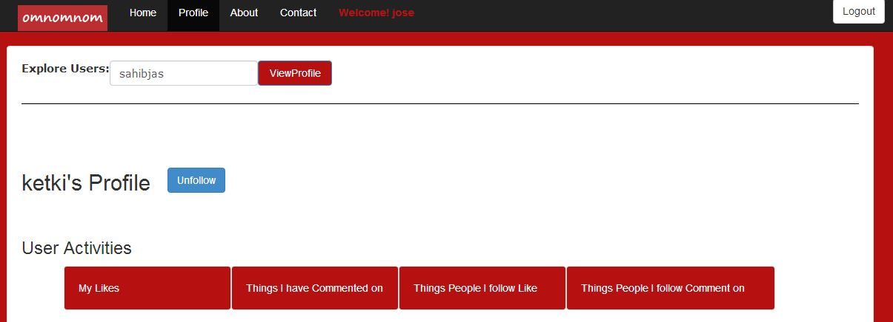

This is the OtherUserProfile Page of other than logged in Users. Other users can be searched using the Explore Users Search.
Users can be followed using the FOLLOW button and their Likes and Comments will be displayed on the profile page of the follower.
The following user activities can be viewed on each user page.
The snap shots of the OtherUserProfile page are displayed below.
